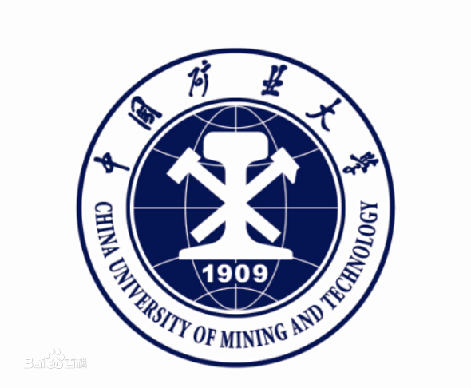

专业设置
- 电子商务
- 工商管理
- 国际经济与贸易
- 金融学
- 会计学
- 人力资源管理
- 市场营销
学院简介
中国矿业大学管理学院创办于1953年。1981年具有管理工程学科硕士学位授权点，1986年具有管理工程学科博士学位授权点。1998年管理科学与工程学科设立博士后科研流动站。2002年管理科学与工程学科成为江苏省重点学科。2018年管理科学与工程成为江苏省优势学科。学院现拥有管理科学与工程、公共管理2个一级学科和金融工程与风险管理、财务管理与系统工程、工程管理、能源资源管理、安全管理5个二级学科博士学位授权点；
拥有管理科学与工程、工商管理、应用经济学、统计学4个一级学科和管理科学与工程、企业管理、技术经济及管理、会计学、金融学、产业经济学、数量经济学、国际贸易学等8个二级学科硕士学位授权点；拥有工商管理（MBA)、高级管理人员工商管理硕士（EMBA）、会计硕士（MPAcc）、物流工程、资产评估和工业工程等6个专业硕士学位授权点以及中加合作办学MBA项目。学院拥有会计学国家特色专业建设点、江苏省工商管理一级学科重点专业建设点、江苏省市场营销特色专业、工商管理省级品牌专业
教授简介
- 卜华 教授，博士生导师 研究方向:公司理财、纳税筹划、会计信息质量分析
- 王安 博士生导师 院长 研究方向:煤炭开采领域的工程、技术创新，现代化矿井建设与生产技术
- 王帮俊 硕士生导师 研究方向:产业组织与技术创新理论研究和煤炭企业信息化应用 wbjun@cumt.edu.cn
- 王德鲁 博士生导师 研究方向:数据挖掘与商务智能、能源与环境系统工程、战略与创新管理 wdlcumt@126.com
- 江红艳 博士生导师 研究方向:品牌管理、消费者行为与管理心理学 hyjiang@cumt.edu.cn